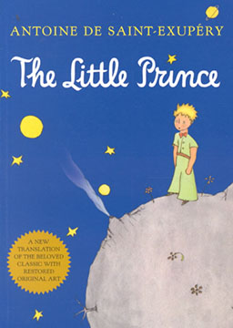

返回图书馆

小王子
The Little Prince
作者：
安托万·德·圣·埃克苏佩里
语言：
双语
简介：
法国作家安托万·德·圣·埃克苏佩里于1942年写成的著名儿童文学小说。飞行员讲述了六年前他因飞机故障迫降在撒哈拉沙漠遇见小王子的故事。神秘的小王子来自另一个星球。飞行员讲了小王子和他的玫瑰的故事。小王子为什么离开自己的星球；在抵达地球之前，他又访问过哪些星球。他转述了小王子对六个星球的历险，他遇见了国王、爱虚荣的人、酒鬼、商人、点灯人、地理学家、蛇、三枚花瓣的沙漠花、玫瑰园、扳道工、商贩、狐狸以及我们的叙述者飞行员本人。这部作品以孩子式的眼光，透视出成人的空虚、盲目，愚妄和死板教条，用浅显天真的语言写出了人类的孤独寂寞、没有根基随风流浪的命运。同时，也表达出作者对金钱关系的批判，对真善美的讴歌。
章节列表
第1章 - 一幅精彩的插图
第2章 - 飞机降落在撒哈拉
第3章 - 你来自哪个星球
第4章 - 另一件很重要的事情
第5章 - 面包树的悲剧
第6章 - 看落日余晖
第7章 - 秘密向我揭开了
第8章 - 小王子的花儿
第9章 - 星球上有两座活火山
第10章 - 星球附近的小行星
第11章 - 第二颗行星
第12章 - 这里住着个酒鬼
第13章 - 商人的星球
第14章 - 一盏路灯和一个点灯人
第15章 - 第六颗行星上住着一个老先生
第16章 - 地球可不是普通的行星
第17章 - 怎么一个人也看不见
第18章 - 穿过沙漠只见到了一朵花儿
第19章 - 请做我的朋友吧
第20章 - 五千朵玫瑰花的联想
第21章 - 狐狸出现了
第22章 - 看见了轰鸣而过的火车
第23章 - 遇见卖精制止渴丸的商人
第24章 - 美丽的沙漠
第25章 - 这口井在唱歌
第26章 - 黄蛇
第27章 - 我从没跟人讲过这个故事